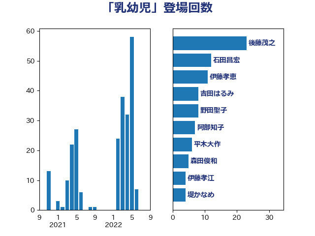

単語「乳幼児」

| 後藤茂之 | 自由民主党 | 23 回 |
| 石田昌宏 | 自由民主党 | 12 回 |
| 伊藤孝恵 | 国民民主党 | 11 回 |
| 吉田はるみ | 立憲民主党 | 8 回 |
| 野田聖子 | 自由民主党 | 8 回 |
| 阿部知子 | 立憲民主党 | 7 回 |
| 平木大作 | 公明党 | 6 回 |
| 森田俊和 | 立憲民主党 | 5 回 |
| 伊藤孝江 | 公明党 | 4 回 |
| 堤かなめ | 立憲民主党 | 4 回 |
| 杉田水脈 | 自由民主党 | 4 回 |
| 林芳正 | 自由民主党 | 4 回 |
| 田村智子 | 日本共産党 | 4 回 |
| 石井苗子 | 日本維新の会 | 4 回 |
| 今井絵理子 | 自由民主党 | 3 回 |
| 秋野公造 | 公明党 | 3 回 |
| 鈴木貴子 | 自由民主党 | 3 回 |
| 塩川鉄也 | 日本共産党 | 2 回 |
| 岸田文雄 | 自由民主党 | 2 回 |
| 島村大 | 自由民主党 | 2 回 |
| 打越さく良 | 立憲民主党 | 2 回 |
| 末松信介 | 自由民主党 | 2 回 |
| 本村伸子 | 日本共産党 | 2 回 |
| 田村憲久 | 自由民主党 | 2 回 |
| 石川博崇 | 公明党 | 2 回 |
| 自見はなこ | 自由民主党 | 2 回 |
| 上川陽子 | 自由民主党 | 1 回 |
| 下野六太 | 公明党 | 1 回 |
| 井上信治 | 自由民主党 | 1 回 |
| 伊藤岳 | 日本共産党 | 1 回 |
| 佐藤英道 | 公明党 | 1 回 |
| 倉林明子 | 日本共産党 | 1 回 |
| 吉良よし子 | 日本共産党 | 1 回 |
| 坂本哲志 | 自由民主党 | 1 回 |
| 大口善徳 | 公明党 | 1 回 |
| 安江伸夫 | 公明党 | 1 回 |
| 宮本徹 | 日本共産党 | 1 回 |
| 枝野幸男 | 立憲民主党 | 1 回 |
| 柴田巧 | 日本維新の会 | 1 回 |
| 森山浩行 | 立憲民主党 | 1 回 |
| 浅野哲 | 国民民主党 | 1 回 |
| 牧義夫 | 立憲民主党 | 1 回 |
| 田中英之 | 自由民主党 | 1 回 |
| 矢倉克夫 | 公明党 | 1 回 |
| 神田潤一 | 自由民主党 | 1 回 |
| 福島みずほ | 社会民主党 | 1 回 |
| 竹谷とし子 | 公明党 | 1 回 |
| 羽田次郎 | 立憲民主党 | 1 回 |
| 遠藤敬 | 日本維新の会 | 1 回 |
| 野間健 | 立憲民主党 | 1 回 |
| 青木愛 | 立憲民主党 | 1 回 |
| 高木かおり | 日本維新の会 | 1 回 |